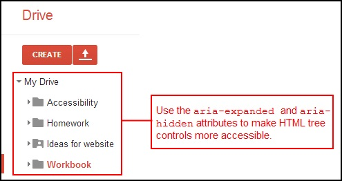
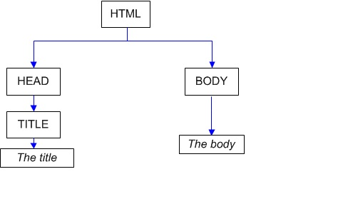

Lesson 2: Basic Structure Of The Web Page.
- CSS.
- DOM
- HTML tree structure.
- Boxes.
The definition of CSS is (Cascading Style Sheets), is a style sheet language used for describing the look and formatting of a document written in a markup language.For example, CSS covers fonts, colours, margins, lines, height, width, background images, advanced positions and many other things.
HTML trees are hierarchical widgets that expand and collapse to progressively hide or reveal content. The expanding folder structure of Google Drive is one example of tree structure.
When an element is clicked to expand or collapse a tree structure of content, it is visually apparent that content has been revealed or hidden. However, a screen reader is unable to determine if either of these changes have occurred on a page as a result of a click on a page.The nodes of every document are organized in a tree structure, called the DOM tree (Document Object Model). With the Document Object Model, programmers can build documents, navigate their structure, and add, modify, or delete elements and content. The DOM represents a document as a tree. The tree is made up of parent-child relationships, a parent can have one or many children nodes.
At the top level, there is an html node, with two children: head and body, among which only head has a child tag title. HTML tags are element nodes in DOM tree, pieces of text become text nodes. Both of them are nodes, just the type is different.
Every thing on website seems to be box!!What about other shapes like circle,triangle..ect?? The answer is, these shapes is not what are they look like they are still box. Using boxes in web page design is alot easier for the designer to using these boxes to design or re-arrange the page every time, just by moving these boxes and change their location.

Avoiding repetition one of principle of good programer,(DRY - Don’t repeat yourself) - This is probably the single most fundamental tenet in programming is to avoid repetition.
Repeatedly doing the same thing over & over in different HTML elements to give them a specific style results in repeated code or very similar code with minor differences. When changes need to be made, it is difficult to remember every place that style is repeated in the HTML elements. Having to manually make those changes in every location can lead to typos or errors, or result in a difference in style where the programmer might want the same style applied.Avoiding repetition is avoid the errores by and give Consistency when using CSS style.
Lesson 3: Introduction to Serious Programming.
- Computer.
- Program And Programming.
- Computer Science.
- Web Crawler.
- Python.
A computer is a general-purpose device that can be programmed to carry out a set of arithmetic or logical operations automatically. Since a sequence of operations can be readily changed, the computer can solve more than one kind of problem.
| Computer Program | Programming |
| A computer program, or just a program, is a sequence of instructions, written to perform a specified task on a computer.[1] A computer requires programs to function, typically executing the program's instructions in a central processor.[2] The program has an executable form that the computer can use directly to execute the instructions. | Computer programming (often shortened to programming) is a process that leads from an original formulation of a computing problem to executable computer programs. Programming involves activities such as analysis, developing understanding, generating algorithms, verification of requirements of algorithms including their correctness and resources consumption, |
A web crawler (also known as a web spider or web robot) is a program or automated script which browses the World Wide Web in a methodical, automated manner.This process is called Web crawling or spidering.Many legitimate sites, in particular search engines, use spidering as a means of providing up-to-date data.Web crawlers are mainly used to create a copy of all the visited pages for later processing by a search engine, that will index the downloaded pages to provide fast searches. Web search engines and some other sites use Web crawling or spidering software to update their web content or indexes of others sites' web content. Web crawlers can copy all the pages they visit for later processing by a search engine which indexes the downloaded pages so the users can search much more efficiently.
Python is a widely used general-purpose, high-level programming language. Its design philosophy emphasizes code readability, and its syntax allows programmers to express concepts in fewer lines of code than would be possible in languages such as C++ or Java.Python was conceived in the late 1980s and its implementation was started in December 1989 by Guido van Rossum.Python uses dynamic typing and a combination of reference counting and a cycle-detecting garbage collector for memory management. An important feature of Python is dynamic name resolution (late binding), which binds method and variable names during program execution.
Expressions represent something, like a number, a string, or an instance of a class. Any value is an expression!Anything that does something is a statement. Any assignment to a variable or function call is a statement. Any value contained in that statement in an expression.
foo = "hello" is a statement that assigns foo to the value of the expression "hello". Since the code "hello" is a simple expression, meaning it contains no operations, nothing is actually evaluated, so foo is just assigned to "hello". More complex expressions actually evaluate things, like adding numbers. Using the word expression seems like it is making things more confusing. Expressions are nothing but values, except they can have operations like addition or subtraction.eval evaluates the string as if it were a python expression. Eval does takes an expression as an argument. However, there's nothing special about this since every single value is an expression. Saying "eval takes a value as an argument" is saying exactly the same thing, but it sounds much simpler
As the name implies, a variable is something which can change. A variable is a way of referring to a memory location used by a computer program. A variable is a symbolic name for this physical location. This memory location contains values, like numbers, text or more complicated types. The way to introduce the variable is to use assignment statment, means:
Name= Expression
The name of the left side refer to the value that expression has, the name can be any sequence of numbers and letters as well as under-score, as well as start with letter.
In 2+3=5 the "=" means the summation of 2 and 3 equal 5, but in the second one my_variable=5 the "=" here means assigns values from right side operands to left side operand. So remember that although we use = for assignment it does not mean equality.You should think of the = sign as un arrow, showing that the value of the right side evaluates to is being assigned to the variable name on the left side.
The sequence of characters or numbers surrounded by quotes;either single or double called (string). The operator (+) between two string means (concatenation).
<string>+<string> outputs the concatenation of the two string
.
So the output of 2+2 is 4, the output of "2"+"2" is 22.
A function is a block of organized, reusable code that is used to perform a single, related action. Functions provide better modularity for your application and a high degree of code reusing.You can define functions to provide the required functionality. Here are simple rules to define a function in Python.
- Function blocks begin with the keyword def followed by the function name and parentheses ( ( ) ).
- Any input parameters or arguments should be placed within these parentheses. You can also define parameters inside these parentheses.
- The first statement of a function can be an optional statement - the documentation string of the function or docstring.
- The code block within every function starts with a colon (:) and is indented.
- The statement return [expression] exits a function, optionally passing back an expression to the caller. A return statement with no arguments is the same as return None.
Defining a function only gives it a name, specifies the parameters that are to be included in the function and structures the blocks of code.Once the basic structure of a function is finalized, you can execute it by calling it from another function or directly from the Python prompt. Following is the example to call printme() function.
The advantages of using functions are:
- Reducing duplication of code
- Decomposing complex problems into simpler pieces
- Improving clarity of the code
- Reuse of code
- Information hiding
Lesson 4: Using Database On Web Page.
- What is network?
- Measuring Networks
- Protocol
- What is URLs?
- HTTP
- What happens when I follow a link? How the server works?
- Modulus and Dictionaries
- Two HTTP Request Methods: GET and POST
- Database
- Validation
- Templates
A network is a group of entities that can communicate, even though they are not all directly connected. In computer networks, networked computing devices exchange data with each other along network links (data connections). The connections between nodes are established using either cable media or wireless media. The best-known computer network is the Internet.Network computer devices that originate, route and terminate the data are called network nodes.
latency: is a time interval between the stimulation and response, or, from a more general point of view, as a time delay between the cause and the effect of some physical change in the system being observed. Latency is physically a consequence of the limited velocity with which any physical interaction can propagate. This velocity is always lower than or equal to the speed of light. Therefore, every physical system that has spatial dimensions different from zero will experience some sort of latency, regardless of the nature of stimulation that it has been exposed to.
Bandwidth :is the bit-rate of available or consumed information capacity expressed typically in metric multiples of bits per second.A bit is the basic unit of information in computing and digital communications. A bit can have only one of two values, and may therefore be physically implemented with a two-state device. These values are most commonly represented as either a 0 or 1. The term bit is a portmanteau of binary digit.
Protocol: is a system of rules that allow two or more entities of a communications system to transmit information via any kind of variation of a physical quantity.Communicating systems use well-defined formats (protocol) for exchanging messages. Each message has an exact meaning intended to elicit a response from a range of possible responses pre-determined for that particular situation. The specified behavior is typically independent of how it is to be implemented. Communications protocols have to be agreed upon by the parties involved.To reach agreement, a protocol may be developed into a technical standard. A programming language describes the same for computations, so there is a close analogy between protocols and programming languages: protocols are to communications as programming languages are to computations.
A Uniform Resource Locator (URL) (commonly informally referred to as a web address, although the term is not defined identically) is a reference to a web resource that specifies its location on a computer network and a mechanism for retrieving it. A URL is a specific type of Uniform Resource Identifier (URI), although many people use the two terms interchangeably.
The Hypertext Transfer Protocol (HTTP) is an application protocol for distributed, collaborative, hypermedia information systems.[1] HTTP is the foundation of data communication for the World Wide Web.
Step 1: Parsing the URL
The first thing the browser has to do is to look at the URL of the new document to find out how to get hold of the new document. Most URLs have this basic form: "protocol://server/request-URI". The protocol part describes how to tell the server which document the you want and how to retrieve it. The server part tells the browser which server to contact, and the request-URI is the name used by the web server to identify the document. (I use the term request-URI since it's the one used by the HTTP standard, and I can't think of anything else that is general enough to not be misleading.)
Step 2: Sending the request
Usually, the protocol is "http". To retrieve a document via HTTP the browser transmits the following request to the server: "GET /request-URI HTTP/version", where version tells the server which HTTP version is used.One important point here is that this request string is all the server ever sees. So the server doesn't care if the request came from a browser, a link checker, a validator, a search engine robot or if you typed it in manually. It just performs the request and returns the result.
Step 3: What the server does?
When the server is set up it is usually configured to use a directory somewhere on disk as its root directory and that there be a default file name (say "index.html") for each directory. This means that if you ask the server for the file "/" (as in "http://www.domain.tld/") you'll get the file index.html in the server root directory. Usually, asking for "/foo/bar.html" will give you the bar.html file from the foo directory directly beneath the server root.Usually, that is. The server can be set up to map "/foo/" into some other directory elsewhere on disk or even to use server-side programs to answer all requests that ask for that directory. The server does not even have to map requests onto a directory structure at all, but can use some other scheme.
The Modulus Operator: This is an operator (like +, -, *, or /) that every programming language has. Some calculators have a mod() function button, and many programming languages have a mod() function or similar, expressed as mod(a, n), for example. Some also support expressions that use "%", "mod", or "Mod" as a modulo or remainder operator, such as: a % n or a mod n .
Dictionary : (class dict) are mutable mappings tying keys and corresponding values. Python has special syntax to create dictionaries ({key: value})a_dictionary = {"key 1":"value 1", 2:3, 4:[]} . The dictionary syntax is similar to the set syntax, the difference is the presence of colons. The empty literal {} results in an empty dictionary rather than an empty set, which is instead created using the non-literal constructor: set().
Two commonly used methods for a request-response between a client and server are: GET and POST.
Get
- GET - Requests data from a specified resource
- GET requests can be cached
- GET requests remain in the browser history
- GET requests can be bookmarked
- GET requests should never be used when dealing with sensitive data
- GET requests have length restrictions
- GET requests should be used only to retrieve data
Post
- POST - Submits data to be processed to a specified resource
- POST requests are never cached
- POST requests do not remain in the browser history
- POST requests cannot be bookmarked
- POST requests have no restrictions on data length
A database is an organized collection of data.It is the collection of schemes, tables, queries, reports, views and other objects.Storing data in a scalable web application can be tricky. A user could be interacting with any of dozens of web servers at a given time, and the user's next request could go to a different web server than the previous request. All web servers need to be interacting with data that is also spread out across dozens of machines, possibly in different locations around the world.Check the Vedio
Any program input – such as a user typing at a keyboard or a network connection – can potentially be the source of security vulnerabilities and disastrous bugs. All input should be treated as potentially dangerous.Determined attackers can use carefully crafted input to cause programs to run unauthorized commands. This technique (validation)can be used to delete or damage data, run malicious programs, or obtain sensitive information.All program inputs are a potential source of problems. If external data is not validated to ensure that it contains the right type of information, the right amount of information, and the right structure of information, it can cause problems.
Real-world Examples:
- In December 2005, a Japanese securities trader made a $1 billion typing error, when he mistakenly sold 600,000 shares of stock at 1 yen each instead of selling one share for 600,000 yen. A few lines of code may have averted this error.
- Web applications are highly vulnerable to input validation errors. Inputting the invalid entry “!@#$%^&*()” on a vulnerable e-commerce site may cause performance issues, or “denial of service”, on a vulnerable system, or invalid passwords such as “pwd’” or “1=1— ” may result in unauthorized access.
- A Norwegian woman mistyped her account number on an internet banking system. Instead of typing her 11-digit account number, she accidentally typed an extra digit, for a total of 12 numbers. The system discarded the extra digit, and transferred $100,000 to the (incorrect) account. A simple dialog box informing her that she had typed too many digits would have helped avoid this expensive error.
Templating, and in particular web templating is a way to represent data in different forms. These forms often (but not always) intended to be readable, even attractive, to a human audience. Frequently, templating solutions involve a document (the template) and data. Template usually looks much like the final output, with placeholders instead of actual data (or example data in simplified form), bears common style and visual elements. Data which is presented using that template may be also separated in two parts - data required to be rendered, and data required for template itself (navigation elements if it is a site, button names if it is some UI). Combining template+data produces the final output which is usually (but not always) a web page of some kind.
Templates allow the user to avoid repetition in HTML, which is really important because it will allow you to make complex applications much more easily. They let the user do this because templates are a library that let you build complicated strings, which is mostly in HTML. In simple terms, templates are used because they separate different types of code. It makes the code more readable. It makes the websites more secure. And it also makes the HTML much easier to modify. Template inheritance will allow the user to build a base, which is known as a “skeleton” template that contains all the common elements of your site and defines blocks that child templates can override. For example, you can design a page that defines a simple HTML skeleton document that you might use for a two-column page. And now it’s the job of the “child” template to fill the empty blocks with content. You can then use a block tags to define blocks that child templates can fill in. What these block tags do is tell the template engine that a child template may override those placeholders in the template.